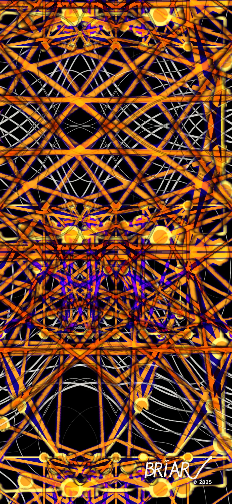

Original art
Girders of an Orange Cathedral
A tall composition in orange, deep red and rust, worked in layer on layer of fine detail. The darker passages hold most of the detail.
- Format
- Tall
- Style
- Intricata
- Catalogue no.
- BRC-INT-9D114300
- Prints
- Made to order, shipped worldwide